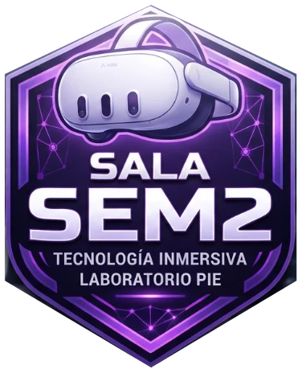

Tour virtual 360° Sala SEM2
Tecnología inmersiva · Laboratorio PIE
Arrastra para mirar alrededor · toca las flechas para avanzar

Tecnología inmersiva · Laboratorio PIE
Arrastra para mirar alrededor · toca las flechas para avanzar